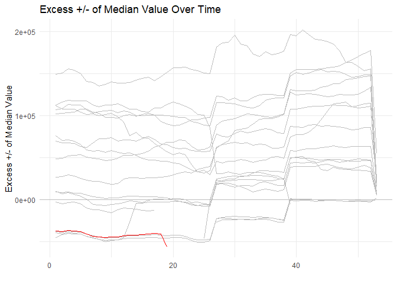
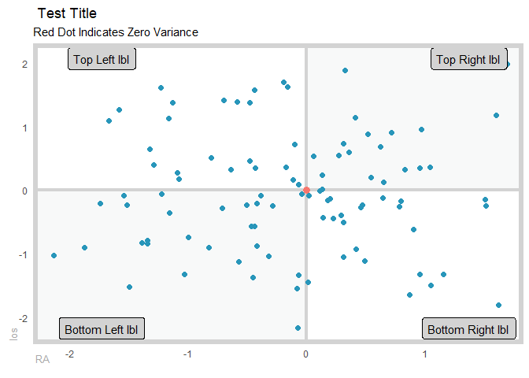

The goal of healthyR is to help quickly analyze common data problems in the Administrative and Clincial spaces.
Installation
You can install the released version of healthyR from CRAN with:
install.packages("healthyR")And the development version from GitHub with:
# install.packages("devtools")
devtools::install_github("spsanderson/healthyR")Example
This is a basic example of using the ts_median_excess_plt() function`:
library(healthyR)
library(timetk)
ts_ymwdh_tbl(.data = m4_daily, .date_col = date) %>%
ts_median_excess_plt(
.date_col = date
, .value_col = value
, .x_axis = wk
, .ggplot_group_var = yr
, .years_back = 5
)
#> Joining, by = "wk"
Here is a simple example of using the ts_ymwdh_tbl() function:
library(healthyR)
library(timetk)
ts_ymwdh_tbl(.data = m4_daily, .date_col = date)
#> # A tibble: 9,743 x 8
#> id date value yr mn wk wd hr
#> <fct> <date> <dbl> <dbl> <ord> <dbl> <ord> <int>
#> 1 D10 2014-07-03 2076. 2014 Jul 27 Thu 0
#> 2 D10 2014-07-04 2073. 2014 Jul 27 Fri 0
#> 3 D10 2014-07-05 2049. 2014 Jul 27 Sat 0
#> 4 D10 2014-07-06 2049. 2014 Jul 27 Sun 0
#> 5 D10 2014-07-07 2006. 2014 Jul 28 Mon 0
#> 6 D10 2014-07-08 2018. 2014 Jul 28 Tue 0
#> 7 D10 2014-07-09 2019. 2014 Jul 28 Wed 0
#> 8 D10 2014-07-10 2007. 2014 Jul 28 Thu 0
#> 9 D10 2014-07-11 2010 2014 Jul 28 Fri 0
#> 10 D10 2014-07-12 2002. 2014 Jul 28 Sat 0
#> # ... with 9,733 more rowsHere is a simple example of using the plt_gartner_magic_chart() function:
library(healthyR)
library(tibble)
library(dplyr)
#>
#> Attaching package: 'dplyr'
#> The following objects are masked from 'package:stats':
#>
#> filter, lag
#> The following objects are masked from 'package:base':
#>
#> intersect, setdiff, setequal, union
plt_gartner_magic_chart(
.data = tibble(x = rnorm(100, 0, 1), y = rnorm(100, 0, 1))
, .x_col = x
, .y_col = y
, .y_lab = "los"
, .x_lab = "RA"
, .plt_title = "Test Title"
, .tl_lbl = "Top Left lbl"
, .tr_lbl = "Top Right lbl"
, .bl_lbl = "Bottom Left lbl"
, .br_lbl = "Bottom Right lbl"
)